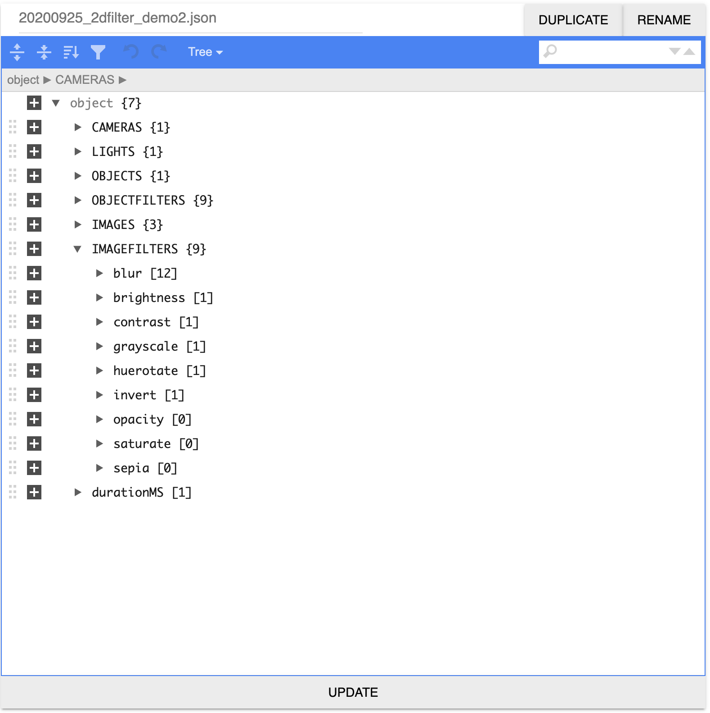
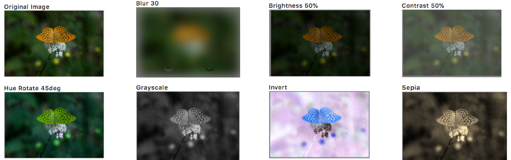
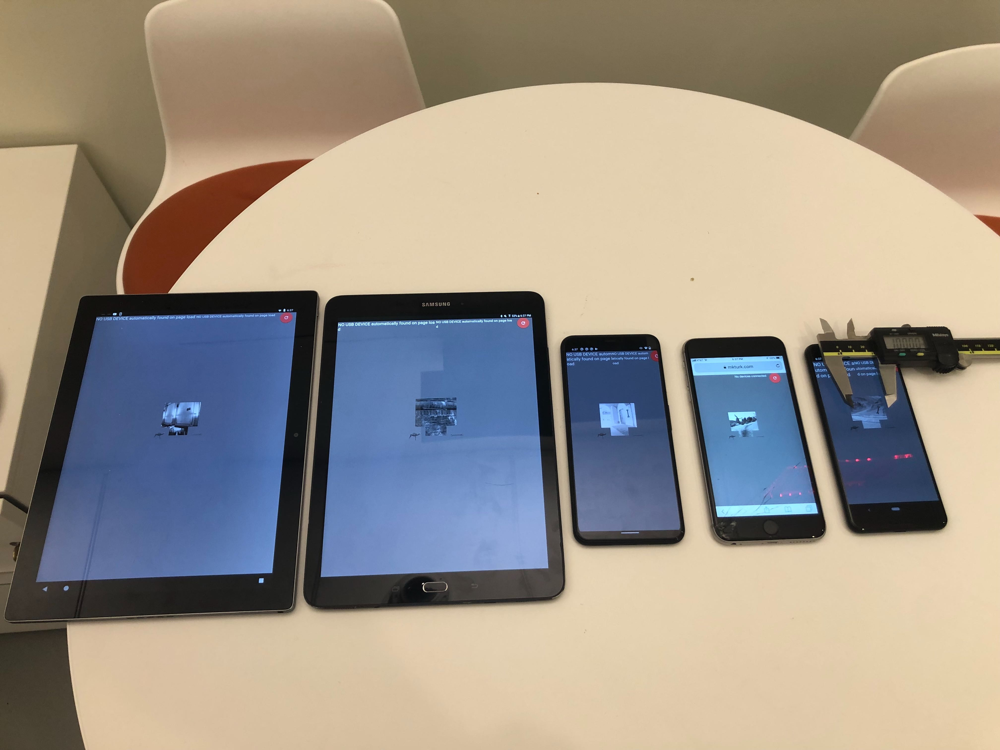
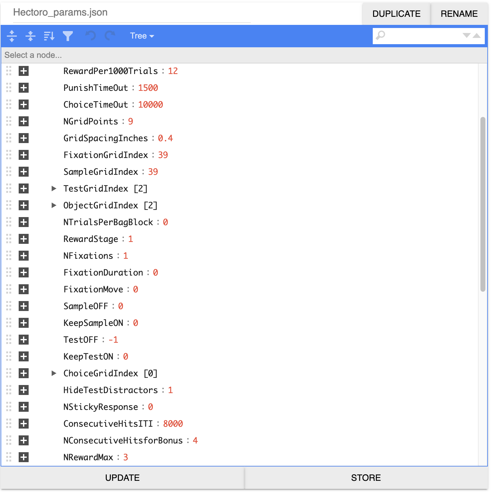
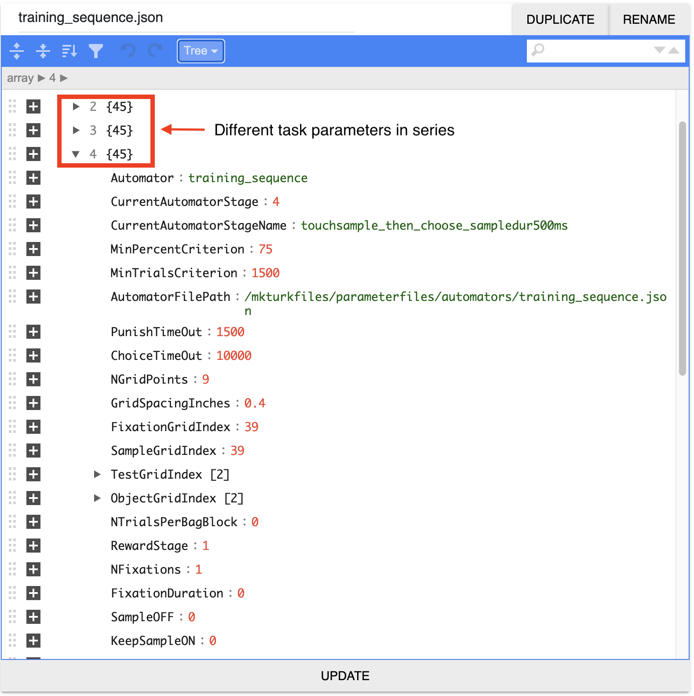
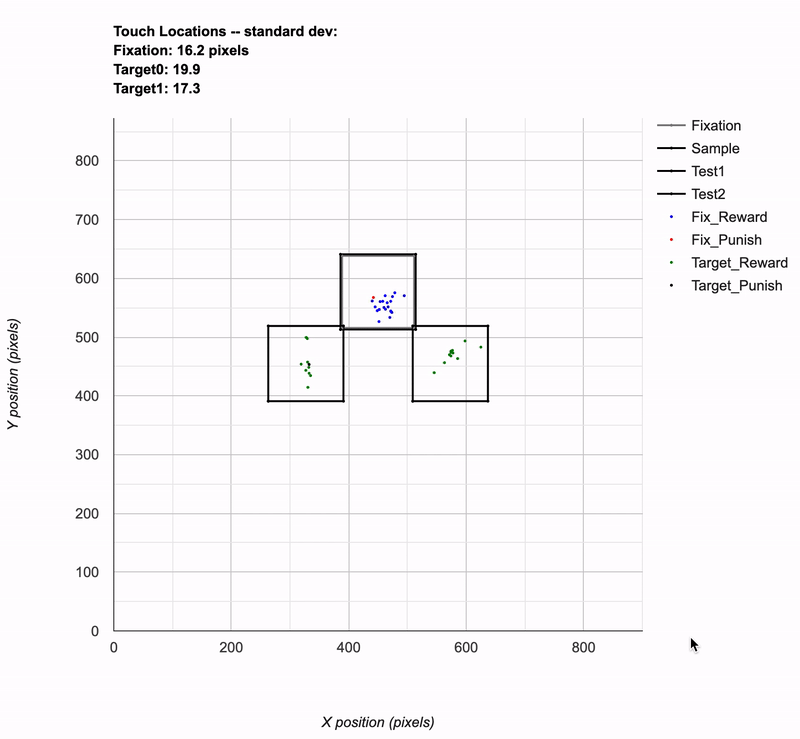
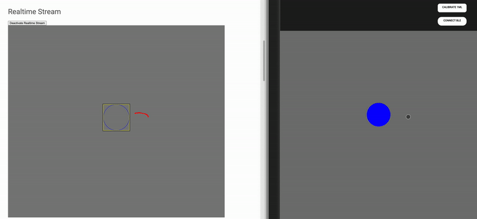
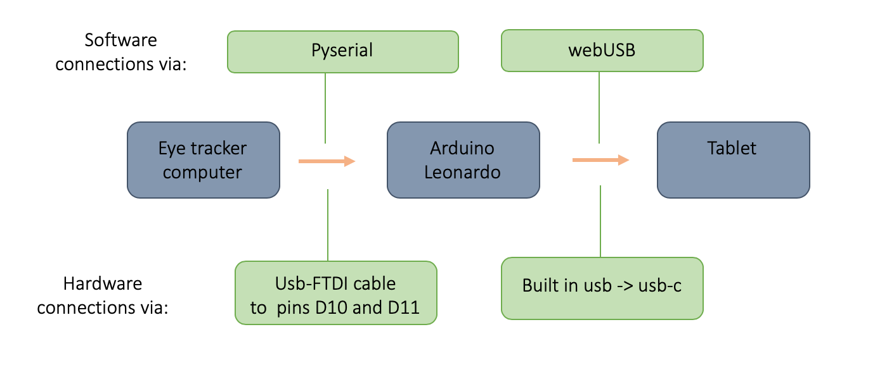

Table of Contents
- 3D Scene Composition
- 2D Image Filtering
- Visual Display
- Double Buffered Rendering
- Consistent Image Display Across Devices
- Task Specification
- Scene Specification
- Automator
- Cloud Data Storage
- Cloud Databasing
- Data Plots in Near Realtime
- Client Mirroring in Realtime
- webUSB Communication
- Eye Tracking
- Recommended Hardware
- Arduino Shield
3D Scene Composition
A scene is composed of two layers:
- Background 2D Image
- Foreground 3D rendered object or scene

2D Image Filtering
As a post-processing step, image filtering can be independently applied to 2D image & 3D scene layers. Included filters: brightness, contrast, blur, hue rotate, reverse contrast, grayscale, sepia tone.
 Visual Display
Advances in display hardware (retina display) and software (Javascript Canvas) improved the speed and precision of image display in the browser. Notably:
- Timing:
window.requestAnimationFrame()displays canvas content locked to the next screen refresh tanks in part to improved timing precision from theperformance.now()function. - Resolution: retinal displays and in particular those on tablets and smartphones are pushing dpi to new levels from >200 on tablets up to 500 dpi on the newest Google Pixel phones. This allows greater detail in image content. Alternatively, this allows viewers to be positioned much closer to the screen, reducing space requirements, while still delivering rich content.
Double Buffered Rendering
An invisible, OffscreenCanvas is used for fast double buffered rendering
of 2D & 3D content while the current frame is displayed on the visible,
onscreen Canvas. When rendering is complete, the fully rendered
OffscreenCanvas content is simply committed to the visible onscreen
Canvas as a no copy bitmap saving memory.
Consistent Image Display Across Devices
To ensure that an image is displayed at the same size in inches across devices, MkTurk detects the device based on a hardware fingerprint and looks up it’s display pixel density per inches to convert from screen pixels to physical inches (*requires device database).
Task Specification
A single JSON file contains the user-controlled task settings (~50 parameters). Here the user specifies which scenes to render and whether the subject should do a fixation, stimulus-response, match-to-sample, or same-different task.
Scene Specification
The task parameter file points to the paths for the scene rendering parameter files.
The scene params file is composed of camera, lights, objects, object filters,
images and image filters as a JSON object. An integrated smart JSON editor in
MkFiles allows the user to add various elements (eg, lights, objects)
starting from stored templates. All parameters such as lighting direction, object
position and filter strength can be animated by entering an array for a movie sequence
instead of a fixed scalar for each stimulus.
Automator
A training curriculum can be made by simply concatenating the parameter files of each task stage into a single JSON file. The automator will automatically move to the next task stage when the specified performance criteria are met (eg, 75% accuracy for a period of at least 1000 trials).
Cloud Data Storage
Data generated by a task in MkTurk are stored in a single human
readable JSON file in cloud storage. All scene rendering parameters are stored
along with task parameters and the task event data. A temporal hierarchy informs
where various event streams are piped -- < 10Hz: data sampled at timescales of
seconds such as trial events (user choices and their timing) are stored in
the cloud JSON file as well as Cloud Firestore; >10Hz: high frequency timeseries
such as eye traces are piped to BigQuery tables.
Cloud Databasing
Databasing supplements Cloud Storage for ease of querying whether in Cloud Firestore, a NoSQL JSON database, or BigQuery, a SQL-esque table database.
Data Plots in Near Realtime
Performance data can be visualized using either Fireplace or Liveplot plotting interfaces; plots receive live updates every few seconds. Fireplace plots trial-averaged performance measures (accuracy, # of trials) across all agents and sessions by querying the Cloud Firestore database. For in-depth analysis of a single agent in a session, Liveplot loads the raw JSON from Cloud Storage, plotting per-trial responses (touch locations, times).
Client Mirroring in Realtime
The subject's realtime behavior (mouse, touchpad or eye movements) can be mirrored in another browser window. This is done by transmitting screen coordinates via the realtime database, allowing for remote monitoring of the behavioral sessions of all subjects directly in liveplot. Latency between the mirror and the actual behavior is ~10 milliseconds.
webUSB Communication
Chrome's webUSB API makes it possible
to establish fast, secure connections with external devices directly from
a client-side web browser. MkTurk currently leverages webUSB
for two-way serial communication with
Arduino microcontrollers.
The Arduino's digital and analog I/Os are interfaced with sensors (photodiode)
and devices (eye tracker).
Eye Tracking
Data from an eye tracker are piped over serial to the Arduino and then from the Arduino to the browser using serial over webUSB. Currently, pupil position, size, and aspect ratio can be transmitted at 90Hz.
Recommended Hardware
- Touchscreen - Google Pixel C or Google Pixel 4 XL
- Pump - Takasago SDMP306D or TCS Micropumps D250S-L
- Microcontroller - Arduino Leonardo
- USB Battery Pack - Yoobao 20000 mAh Battery
- Bluetooth Scale - Motif Mentor
Arduino Shield
We've designed a custom shield for the Arduino Leonardo that breaks out two software serial lines as well as four (x2) analog input lines. The analog inputs can be used to receive photodiode signals for keeping track of when frames rendered on the physical screen. The software serial ports are useful for receiving eye tracker signals or RFID signals.

Get Started
To get MkTurk, visit our Get Started page.